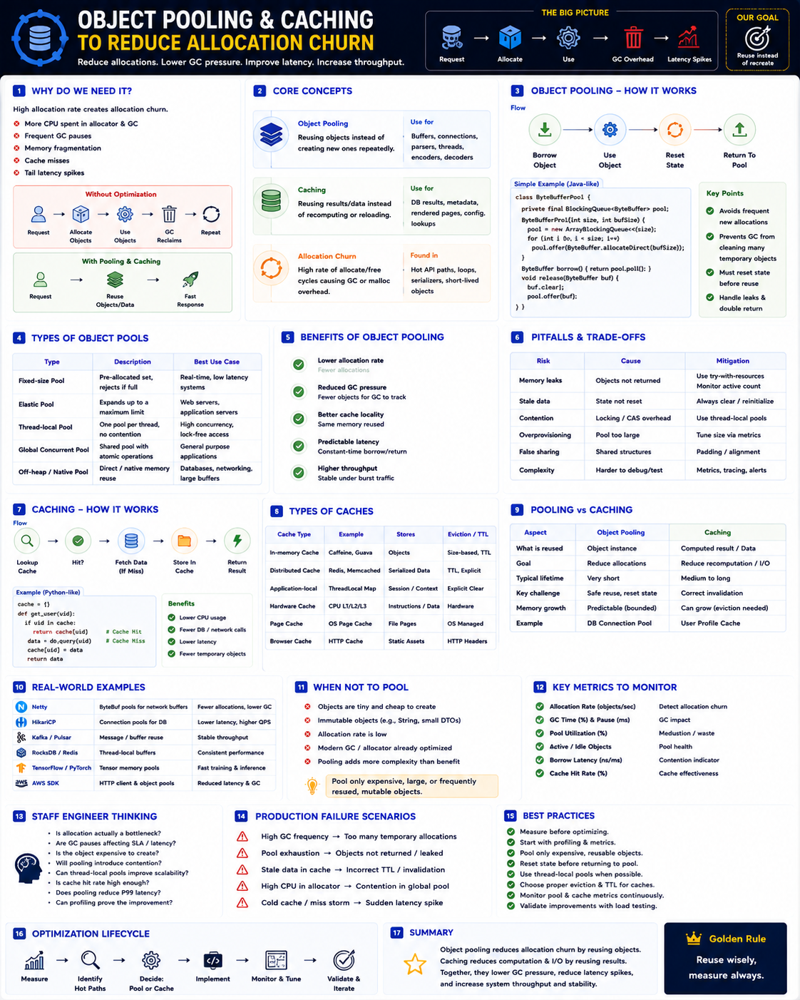

Reducing allocation churn — Staff Engineer level
The Big Picture
Every request creates temporary objects. Without optimization, this produces continuous allocation → GC → fragmentation → latency spikes.
Allocate less. Reuse more. Two techniques address this: Object Pooling (reuse objects) and Caching (reuse data and computation results).
Two Optimization Strategies
| Technique | Reuses | Goal |
|---|---|---|
| Object Pooling | Objects | Reduce allocations & GC |
| Caching | Data / Results | Reduce computation & I/O |
They are complementary — pooling reduces how often you allocate; caching reduces how much work you do.
Why Allocation Churn Matters
Millions of heap allocations per second cause:
Object Pool Lifecycle
Pool types
| Pool Type | Best Use Case |
|---|---|
| Fixed-size | Real-time systems |
| Elastic | Web servers |
| Thread-local | High-QPS services (no locking) |
| Global Concurrent | Shared application resources |
| Off-heap | Databases & networking |
Pooling Trade-offs
A poorly implemented pool can perform worse than allocating new objects.
| Problem | Cause | Solution |
|---|---|---|
| Pool Exhaustion | Objects not returned | Monitor active count |
| Memory Leak | Borrowed object retained | Always release objects |
| Stale Data | Object not reset | Clear state before reuse |
| Lock Contention | Shared pool | Thread-local pools |
| Memory Waste | Oversized pool | Tune pool size |
Caching — Reuse Expensive Results
Cache types
| Cache | Stores |
|---|---|
| In-memory (Guava, Caffeine) | Java objects |
| Distributed (Redis, Memcached) | Serialized data |
| Local config cache | Configuration values |
| CPU Cache | Instructions & data |
| Page Cache | File contents |
Thread-Local Pools
Shared Pool
Thread-Local Pool
Thread-local pools: no locking, better CPU cache locality, higher scalability.
Runtime Built-in Pooling
| Runtime | Built-in Pooling |
|---|---|
| Java | Commons Pool, ThreadLocal, ByteBuffer pools, HikariCP |
| Go | sync.Pool |
| .NET | ArrayPool<T>, ObjectPool<T> |
| C++ | Slab allocator, jemalloc arenas |
| Rust | Arena allocators |
Real-World Examples
Netty — ByteBuf Pooling
Pools ByteBuf objects instead of allocating new ByteBuffer() per request. Result: lower GC, lower latency, better throughput.
HikariCP — Connection Pool
DB connections involve TCP + auth + session setup. HikariCP reuses them. Connection setup happens only once; subsequent requests borrow and return.
Kafka — Buffer Pooling
Pools network and compression buffers. Result: stable throughput, lower allocation rate, lower GC frequency.
Redis — Data Caching
Caches frequently accessed values. Eliminates repeated DB calls, object creation, and network round trips. Memory ↑, latency ↓.
When NOT to Pool
Don't pool
Modern allocators & GCs handle these well.
Do pool
Monitoring & Tuning Metrics
| Metric | Purpose |
|---|---|
| Allocation Rate | Detect allocation churn |
| Pool Utilization | Measure efficiency |
| Borrow Latency | Detect contention |
| Active Objects | Pool exhaustion signal |
| Idle Objects | Memory waste signal |
| Cache Hit Rate | Cache effectiveness |
| GC Time | Allocation pressure |
Tune pools using production telemetry, not assumptions.
Staff Engineer Thinking
Junior
Can we use an object pool?
Senior
Will pooling reduce GC?
Staff asks
Production Failure Scenarios
High Minor GC Frequency
Cause: Millions of temporary allocations · Fix: Reuse buffers or reduce allocation rate
Connection Creation Bottleneck
Cause: Opening DB connections per request · Fix: Use HikariCP or equivalent connection pool
Pool Exhaustion
Cause: Objects not returned · Fix: Monitor active count, investigate leaks
Cache Miss Storm
Cause: Cold cache or wrong TTL · Fix: Tune cache size, preload hot data, optimize eviction
High CPU Despite Pooling
Cause: Lock contention on shared pool · Fix: Partition or use thread-local pools
Staff Engineer Decision Framework
| Scenario | Recommended Strategy |
|---|---|
| Database connections | Connection Pool (HikariCP) |
| Network buffers | Object Pool |
| Serialization buffers | Thread-local Pool |
| Frequently accessed data | Cache (Caffeine / Redis) |
| Static configuration | In-memory Cache |
| Tiny temporary objects | Let GC handle them |
| High-concurrency services | Thread-local Pool + Cache |
Production Debugging Checklist
Key Takeaways
